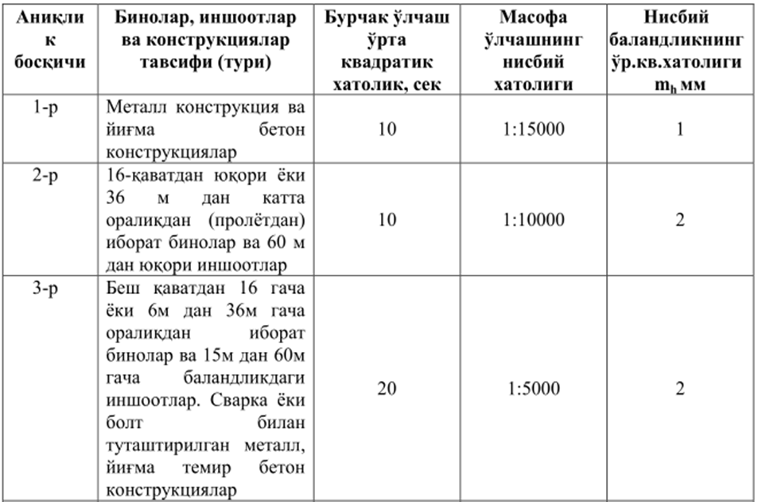

8-маруза Мавзу: Қурилиш чеки ва геодезик режалаш ишлари аниқлиги меъерлари. Геодезик ишларни юритишдаги техник хужжатлар
Йиғма конструкцияларнинг геометрик аниқлигини таъминлашдаги "Қурилиш меъёрлари ва қоидалари”
(ҚМҚ) талабларини кўриб чиқамиз.
Геометрик ўлчамнинг лойиҳавий аниқлиги, лойиҳада берилган ўлчамнинг I, номинал қиймати,
энг
катта 1 max ва энг кичик 1 min чекли қийматлари ҳамда юқори до ва қуйи бе чекли чекланишлар
билан характерланади ва қуйидаги формула ёрдамида ҳисобланади:
Энг катта ва энг кичик чекли қийматлар фарқи қуйидагича ҳисобланади:
Геометрик ўлчамнинг ҳақиқий аниқлиги чекланиш қиймати д; билан ифодаланади ва ҳақиқий l; ва
номинал I, қийматлар фарқига тенг бўлади:
Қурилишда меъёрлар тизими, ишлаб чиқариш жараёнининг босқичлари аниқликлари бўйича гуруҳлаш
принципида тузилган. Қурилиш конструкциялари ва элементларининг маълум қисмида йиғилган
хатоликларни
таъсирини йўқотиш учун йиғма конструкцияларда тирқишлар ёки чоклар (бўшлик) қолдириш кўзда
тутилади. Бу тирқиш ва чоклар компенсатор вазифасини бажаради.
Режалаш ишларини бажариш аниқлигига бўлган талаблар, бино ва конструкциялар турларига
боғлиқ
равишда, режалашнинг олтита босқичи учун аниқликлари 1- жадвалда келтирилган.

Қурилиш майдонидаги геодезик режалаш ишлари геодезик ҳисоблар ва қурилиш чизмалари асосида
бажарилади. Ер ости ва ер устки қисмидаги бино ва иншоотларнинг ўзаро жойлашиш ҳолатини
кўрсатадиган бош план, асосий техник ҳужжат ҳисобланади.
Қурилиш – монтаж ишларига бўлган талабга боғлиқ равишда доимий бино ва иншоотларнинг
бош
планлари қурилиш бош планлари ва ижроий бош планларга бўлинади.
Доимий бино ва иншоотларнинг бош плани қурилиш майдонидаги барча доимий бино ва
иншоотлар
мажмуасини ўз ичига олади. Бош план 1:500, 1:1000, 1:2000 масштабларда тузилади.
Қурилиш бош плани лойиҳаланадиган барча асосий бино ва иншоотлар, вақтинчалик ва
ёрдамчи
(бетон, шлакоблок заводлари, устахоналар), автомобил ва темир йўллар, вақтинчалик инженерлик
тармоқлари (алоқа ва электр узатиш тармоқлари, сув ва иссиқлик узатиш тармоқлари ва ҳ.к.)
ҳамда вақтинчалик омбор ва хизматчи хоналарнинг жойлашиш лойиҳаси ҳисобланади.
Ижроий бош план барпо этилган бино ва иншоотларнинг амалдаги ҳолатини белгилайди ва у
қурилиш монтаж ишлари тугагандан кейин
тузилади.
Геодезик ишларда бош пландан ташқари бино ва иншоотларнинг ишчи чизмалари кенг
қўлланилади. Ишчи чизмалар таркибига қуйидагилар киритилади:
- бино ва иншоотларнинг бўйлама ва кўндаланг асосий ўқларини белгилайдиган иншоотлар
асосий
ўқларини режалаш плани. (Бундай планларда асосий ўқларнинг кесишиш жойлари, бинолар
характерли қисмлари координаталари, йўллар бурилиш бурчаклари ва ер ости инженерлик
коммуникациялар қудуқларининг координаталари келтирилади);
- барча режалаш ўқлари кўрсатилган пойдевор плани; - бинонинг архитектурасини
ифодаловчи вертикал (тик) қирқимлар;
- асосий ва ёрдамчи ўқларни ҳамда
лойиҳавий отметкаларни аниқ
геодезик режалашда фойдаланадиган саноат ва технологик қурилмаларнинг
монтаж чизмалари.
Қурилиш чизмалари таркибига шунингдек тик текислаш (вертикал планировка) лойиҳасини
жойга кўчириш чизмаси ҳам киради.
Саноат ва турар жой бинолари олдиндан ишлаб чиқилган лойиҳа асосида
қурилади.